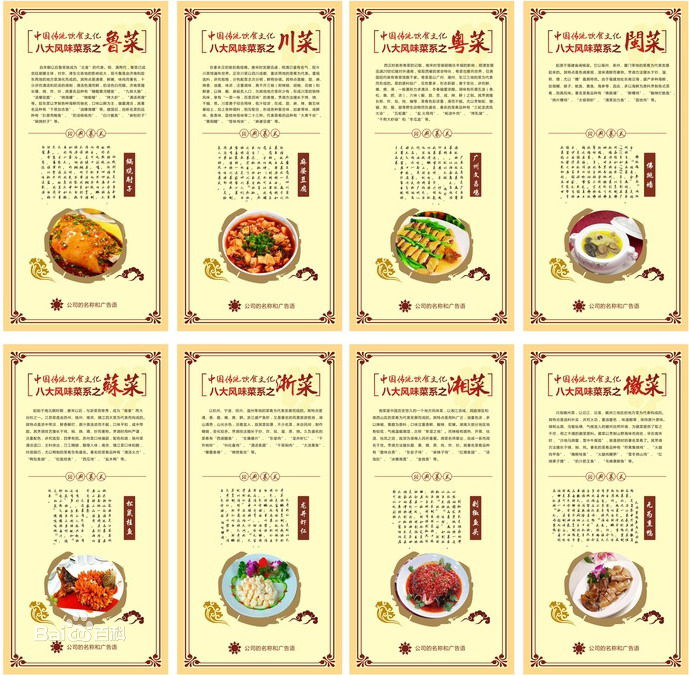

菜系，又称“帮菜”，是指在选料、切配、烹饪等技艺方面，经长期演变而自成体系，具有鲜明的地方风味特色，并为社会所公认的中国饮食的菜肴流派。
中国饮食文化的菜系，是指在一定区域内，由于气候、地理、历史、物产及饮食风俗的不同，经过漫长历史演变而形成的一整套自成体系的烹饪技艺和风味，并被全国各地所承认的地方菜肴。
早在商周时期中国的膳食文化已有雏形，以太公望最为代表，再到春秋战国的齐桓公时期，饮食文化中南北菜肴风味就表现出差异。到唐宋时，南食、北食各自形成体系。到了南宋时期，南甜北咸的格局形成。发展到清代初期时，鲁菜、川菜、粤菜、苏菜，成为当时最有影响的地方菜，被称作“四大菜系”。到清末时，浙菜、闽菜、湘菜、徽菜四大新地方菜系分化形成，共同构成中国传统饮食的“八大菜系”。
除八大菜系外还有一些在中国较有影响的细分菜系，潮州菜，东北菜，本帮菜，赣菜，楚菜，京菜，津菜，冀菜，豫菜，客家菜等菜系。